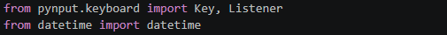
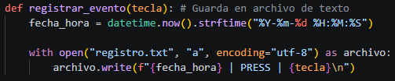
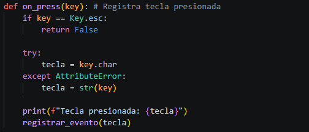
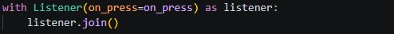
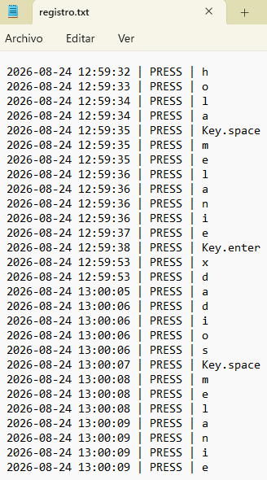

Actividad 03
No presiones Esc... todavía
Registro de eventos del teclado y asociación temporal mediante Python en un entorno controlado.
Objetivo
Implementar y documentar, en un entorno controlado, un programa basado en eventos de teclado y callbacks que permita registrar las pulsaciones realizadas, asociarlas temporalmente mediante una marca de fecha y hora y conservar los registros en un archivo local, con el fin de comprender el funcionamiento técnico de una técnica de captura de entrada y reconocer sus implicaciones dentro de la ciberseguridad.
Desarrollo
La actividad se desarrolló utilizando Python en Visual Studio Code. Primero se configuró el entorno de ejecución de Python y se instaló la biblioteca pynput, utilizada para detectar eventos del teclado.
A partir del código base proporcionado en clase, se implementó una función para registrar las pulsaciones detectadas. Cada evento se asocia con la fecha y hora en que ocurrió y se almacena en un archivo de texto denominado registro.txt.
Para conservar los registros entre ejecuciones se utilizó el modo de apertura append, de manera que los nuevos eventos se agregan al final del archivo sin eliminar la información registrada anteriormente.
El programa permanece escuchando las pulsaciones mediante un listener y utiliza la tecla Esc como mecanismo para finalizar la ejecución.
Código

pynput.keyboard -> Se utiliza para interactuar con los eventos del teclado. De este módulo se importan Key y Listener, utilizados respectivamente para identificar teclas especiales y escuchar las pulsaciones realizadas.
Key -> Permite identificar teclas especiales del teclado, como Esc, Enter o Space. En esta implementación se utiliza para detectar la tecla Esc, que finaliza la ejecución del programa.
Listener -> Es el componente encargado de permanecer atento a los eventos del teclado y ejecutar la función on_press cada vez que se detecta una pulsación.
datetime -> Permite obtener la fecha y hora actuales del sistema. Se utiliza para asociar temporalmente cada pulsación registrada.

Esta función se encarga de almacenar cada pulsación detectada en el archivo registro.txt.
Primero obtiene la fecha y hora actual mediante datetime.now() y las convierte al formato AAAA-MM-DD HH:MM:SS.
Posteriormente abre registro.txt en modo append ("a"), lo que permite agregar nuevos registros al final del archivo sin eliminar los eventos almacenados anteriormente.
Finalmente escribe la fecha y hora, el tipo de evento (PRESS) y la tecla detectada.
-> Si registro.txt no existe, Python lo crea automáticamente. Si ya existe, los nuevos eventos se agregan al final del archivo.

Esta función se ejecuta cada vez que el listener detecta una tecla presionada.
Primero verifica si la tecla corresponde a Esc. En caso afirmativo, devuelve False, lo que detiene el listener y finaliza la ejecución.
Para las demás teclas, intenta obtener su carácter mediante key.char. Si se trata de una tecla especial que no posee un carácter, se utiliza str(key) para representarla.
Finalmente, muestra la tecla detectada en la terminal y llama a registrar_evento() para almacenarla en el archivo de registro.
-> Las teclas alfanuméricas poseen un atributo char, por ejemplo h o 5. Algunas teclas especiales, como Enter o Space, no tienen este atributo. Por ello, se utiliza una excepción AttributeError para detectar estos casos y representar la tecla mediante str(key).

Se crea un listener que permanece atento a las pulsaciones del teclado y utiliza on_press como función de respuesta ante cada evento.
listener.join() mantiene el listener activo hasta que on_press devuelve False al detectar la tecla Esc.
Resultados
Se obtuvo un programa funcional capaz de detectar pulsaciones del teclado y registrarlas en un archivo local. Cada evento almacenado incluye la fecha y hora de ocurrencia, así como la tecla detectada, permitiendo establecer el orden temporal de los eventos.
Durante las pruebas se comprobó que el archivo registro.txt se genera automáticamente cuando se realiza el primer registro y que los eventos posteriores se agregan al contenido existente sin sobrescribir los registros anteriores.
También se verificó que la ejecución puede finalizar mediante la tecla Esc, conservando los datos registrados en el archivo.

Conclusión
La actividad permitió comprender de manera práctica el funcionamiento de los eventos de teclado y su implementación mediante Python y la biblioteca pynput. A partir del código base proporcionado, fue posible desarrollar un mecanismo capaz de detectar pulsaciones, asociarlas con una marca temporal y almacenarlas de manera persistente en un archivo local.
Las pruebas realizadas permitieron comprobar que los eventos se registran correctamente, que cada uno conserva la fecha y hora de su ocurrencia y que los registros permanecen disponibles después de finalizar la ejecución. Esto permitió relacionar conceptos como event hooks, callbacks, registro de eventos y persistencia con una aplicación práctica dentro del área de seguridad informática.
Finalmente, la actividad permitió reconocer las implicaciones de las técnicas de captura de entrada y la importancia de estudiarlas dentro de entornos controlados y con fines académicos.